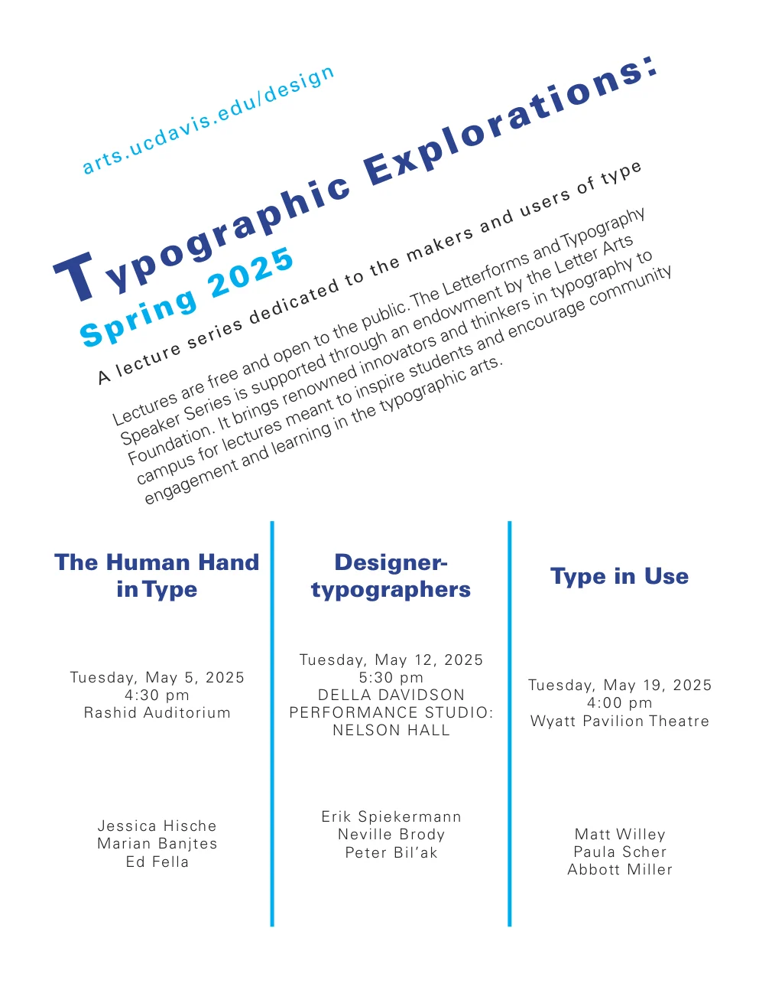
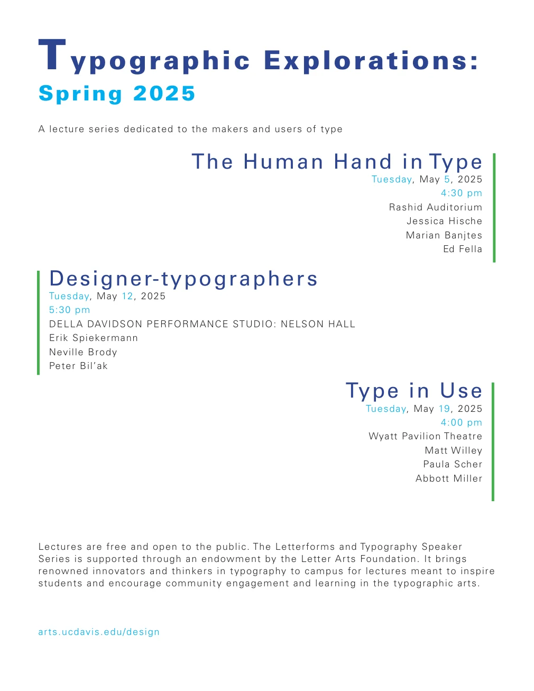
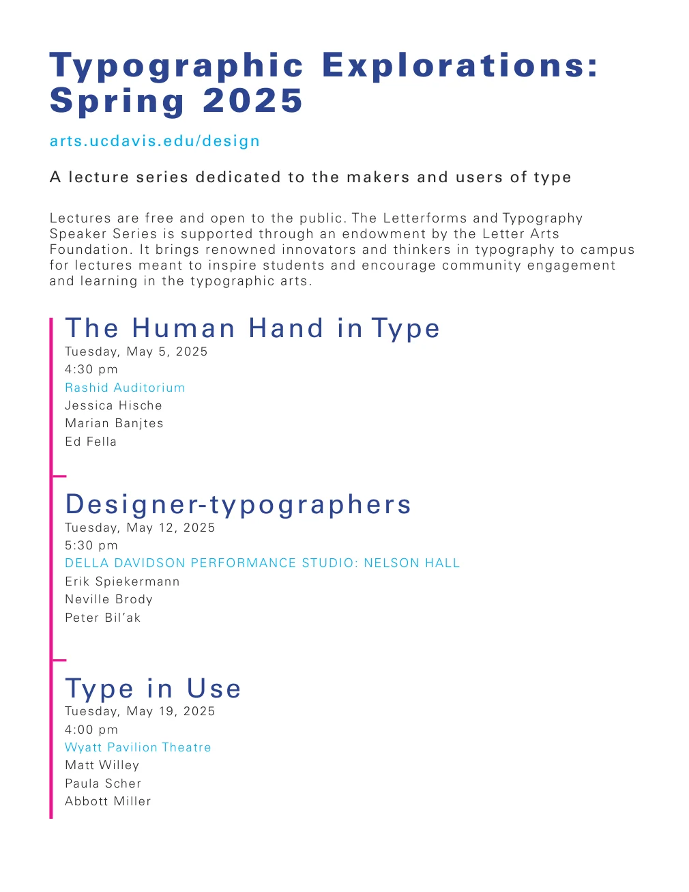
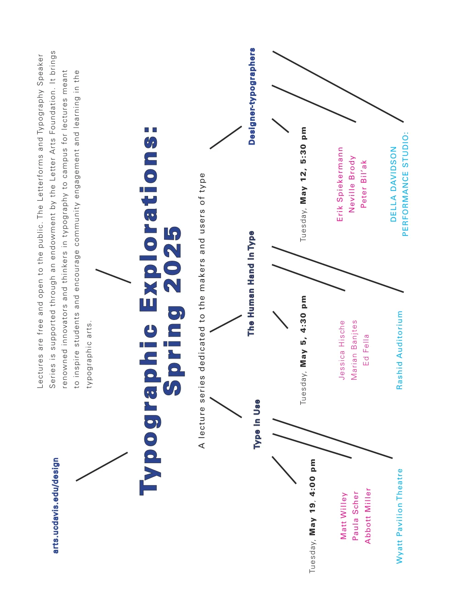

DES 115 · TYPOGRAPHY · COURSEWORK
Typographic Explorations
A four-page layout study for a fictionalized lecture-series announcement, organizing speakers, locations, dates and supporting text.

01 / HIERARCHY
Make information easy to scan
Project 2 explores several layout approaches for “Typographic Explorations: Spring 2025.” The pages test alignments, spacing, weight and visual grouping across a lecture schedule.
02 / ITERATION
Compare compositions
The archive includes early comp PDFs and a final four-page PDF. The examples below are taken from the final comp and show multiple alternatives, not four independent events.



PROJECT MATERIALS